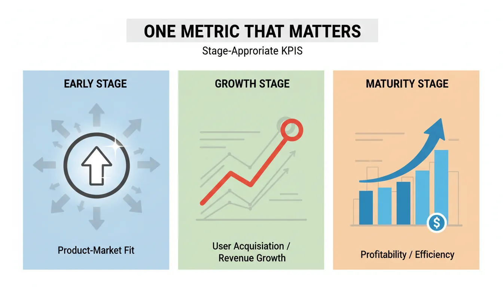
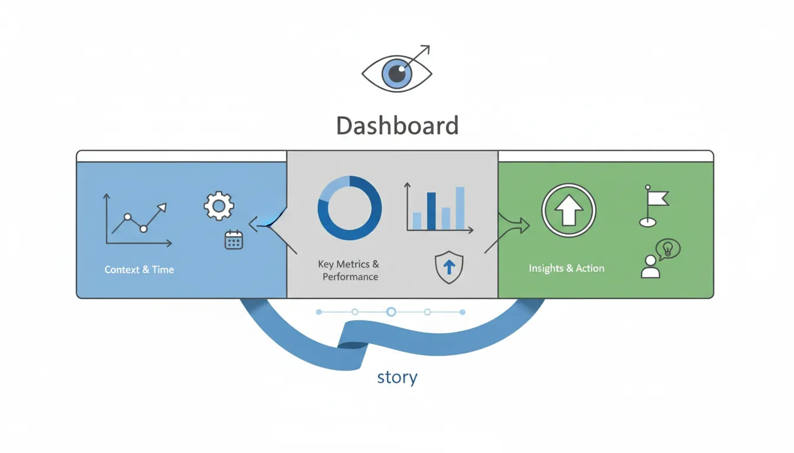
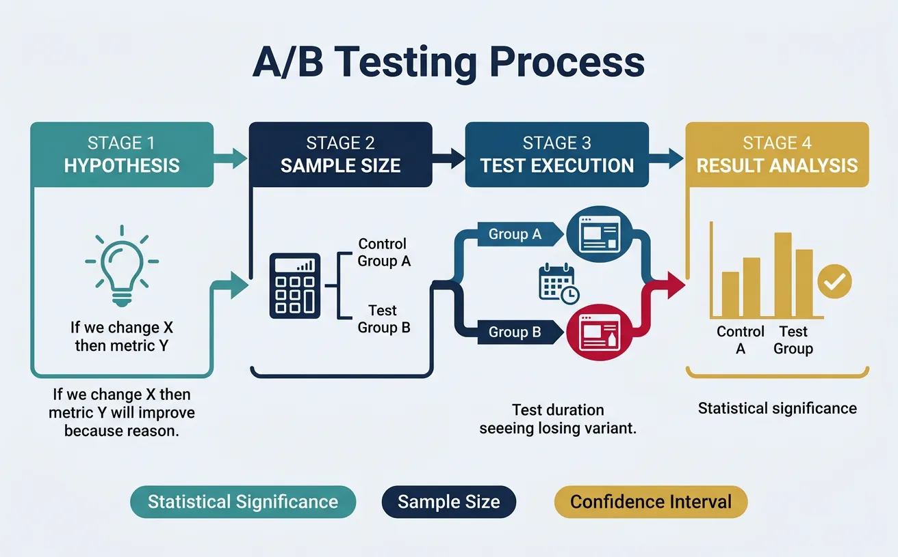
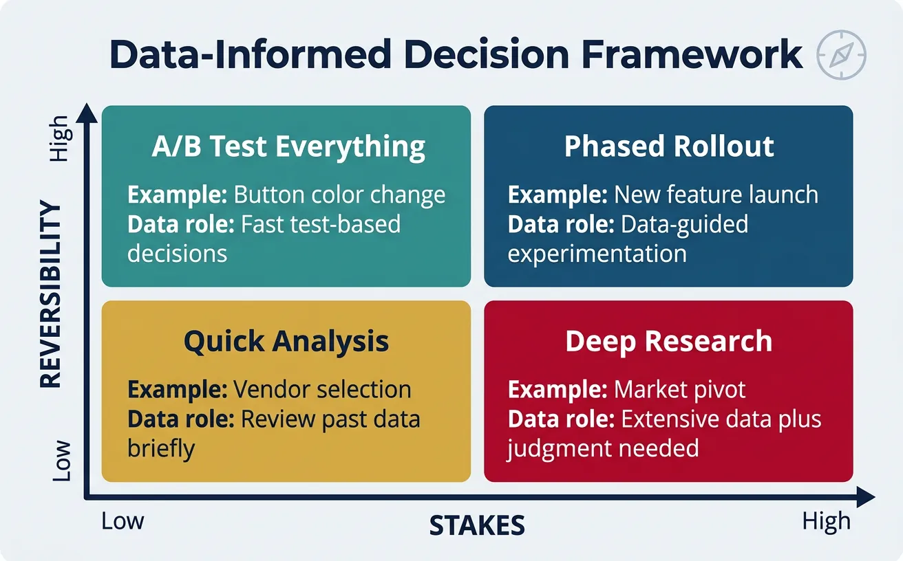

1. Introduction
In the age of data, intuition isn't enough. This guide covers how to build a data-driven culture that uses metrics and experimentation to guide every decision.
Complete Startup Journey
Ideation & Opportunity Recognition
Problem discovery, market gaps, idea generation frameworksIdea Validation & MVP Prototyping
Customer discovery, landing pages, prototype testingBusiness Models & Canvas
BMC, lean canvas, revenue models, value propositionsLean Startup Methodology
Build-measure-learn, pivoting, validated learningFundraising & Financial Modeling
VC, angels, SAFE notes, cap tables, financial projectionsBuilding Your Founding Team
Co-founder selection, equity splits, team dynamicsHiring & Company Culture
Recruiting, culture building, OKRs, team scalingScaling Operations & Growth Hacking
Growth loops, viral mechanics, operational scalingMarketing Campaigns & Digital Growth
CAC/LTV, digital marketing, positioning, channelsLegal, Financial & Risk Foundations
Entity structure, IP, compliance, burn rate managementData-Driven Decision Making
SaaS metrics, NPS, analytics dashboards, A/B testingExit Strategies & Investor Pitches
Valuations, pitch decks, M&A, IPO preparationStartup Ecosystem & Networking
Accelerators, mentors, communities, ecosystem mappingInnovation, Technology & Future Trends
Emerging tech, AI/ML, deep tech, future marketsCapstone Projects & Portfolio
Comprehensive startup plan, portfolio presentation2. Selecting & Tracking KPIs by Stage
KPIs (Key Performance Indicators) are the vital signs of your startup. But measuring everything means measuring nothing—you need to focus on the metrics that matter most at each stage.

At any given time, there should be ONE metric that the entire company focuses on. This metric should be actionable, auditable, and aligned with your current stage goal.
Stage-Appropriate KPIs
| Stage | Focus | Key Metrics | OMTM Example |
|---|---|---|---|
| Pre-Launch | Validation | Landing page signups, survey responses, LOIs | Email signup conversion rate |
| MVP | Engagement | DAU, session length, feature usage, retention | Week 1 retention rate |
| Product-Market Fit | Retention | Cohort retention, NPS, revenue per user | 40% "very disappointed" survey |
| Growth | Acquisition | CAC, viral coefficient, channel efficiency | CAC payback period |
| Scale | Economics | LTV:CAC, gross margin, net revenue retention | LTV:CAC ratio |
The Pirate Metrics Framework (AARRR)
AARRR Funnel for Startups:
ACQUISITION → How do users find you?
│ • Website visits, app downloads
│ • Traffic sources, channel attribution
│ • Cost per visit/download
│
ACTIVATION → Do they have a good first experience?
│ • Account creation completion
│ • Onboarding completion
│ • "Aha moment" reached
│
RETENTION → Do they come back?
│ • D1/D7/D30 retention rates
│ • Cohort analysis curves
│ • Session frequency
│
REVENUE → Do they pay?
│ • Conversion to paid
│ • ARPU (Average Revenue Per User)
│ • Expansion revenue
│
REFERRAL → Do they tell others?
• K-factor (viral coefficient)
• NPS score
• Referral conversion rate
SaaS-Specific Metrics
| Metric | Formula | Target (B2B SaaS) |
|---|---|---|
| MRR (Monthly Recurring Revenue) | Sum of all monthly subscriptions | Growing 10-20%/month early stage |
| ARR (Annual Recurring Revenue) | MRR × 12 | Track for investor reporting |
| Churn Rate | Customers lost ÷ Starting customers | <2% monthly (SMB), <1% (Enterprise) |
| Net Revenue Retention (NRR) | (Start MRR + Expansion - Churn - Contraction) ÷ Start MRR | >100% (best-in-class: >120%) |
| LTV (Lifetime Value) | ARPU × Gross Margin ÷ Churn Rate | LTV:CAC > 3:1 |
| CAC (Customer Acquisition Cost) | Sales & Marketing spend ÷ New customers | Payback <12 months |
| Quick Ratio | (New MRR + Expansion) ÷ (Churn + Contraction) | >4 (healthy growth) |
SaaS Metrics Dashboard
Enter your SaaS metrics to calculate key ratios and health indicators.
All data stays in your browser. Nothing is sent to or stored on any server.
3. Building Analytics Dashboards
A dashboard should tell a story at a glance. If you need to explain it, it's not working.

Analytics Stack by Stage
EARLY STAGE (Free/Low Cost):
├── Google Analytics 4 - Web traffic, conversions
├── Mixpanel/Amplitude (free tier) - Product analytics
├── Google Sheets - Financial metrics, manual tracking
├── Posthog - Open source, self-hosted option
└── Hotjar - Session recordings, heatmaps
GROWTH STAGE:
├── Amplitude/Mixpanel (paid) - Advanced behavioral analytics
├── Looker/Metabase/Mode - BI dashboards from data warehouse
├── Segment - Customer data platform, event routing
├── Customer.io/Braze - Marketing automation
└── Stripe + ChartMogul/Baremetrics - Subscription analytics
SCALE STAGE:
├── Snowflake/BigQuery/Redshift - Data warehouse
├── dbt - Data transformation
├── Fivetran/Airbyte - ETL pipelines
├── Tableau/Looker - Enterprise BI
└── Custom dashboards - Engineering-built
Dashboard Design Principles
| Principle | Why It Matters | Implementation |
|---|---|---|
| Hierarchy | Most important metrics visible first | OMTM at top, supporting metrics below |
| Context | Numbers mean nothing without comparison | Show vs. last period, vs. target, vs. benchmark |
| Trends | Direction matters more than point-in-time | Use sparklines, time series charts |
| Actionability | Data should trigger decisions | Include thresholds, alerts, next steps |
| Audience | Different roles need different views | Exec summary vs. operational detail |
Executive Dashboard Template
┌─────────────────────────────────────────────────────────────────┐
│ COMPANY DASHBOARD - Week of Jan 27, 2026 │
├─────────────────────────────────────────────────────────────────┤
│ │
│ 📈 ONE METRIC THAT MATTERS: Net Revenue Retention │
│ ████████████████████████░░░░ 115% (Target: 110%) ✅ │
│ │
├─────────────────────────────────────────────────────────────────┤
│ 💰 REVENUE │ 👥 GROWTH │ 😊 QUALITY│
│ MRR: $425K (+8%) │ New Customers: 45 │ NPS: 62 │
│ ARR: $5.1M │ Churn: 3 customers │ CSAT: 4.2 │
│ Pipeline: $1.2M │ CAC: $2,400 │ D7: 45% │
├─────────────────────────────────────────────────────────────────┤
│ 🔴 RED FLAGS │ 🟢 WINS THIS WEEK │
│ • Trial→Paid down 5% │ • Landed Enterprise acct ($50K/yr) │
│ • Support tickets +20% │ • Feature X adoption hit 60% │
│ • Page load time +0.5s │ • Hired VP of Sales │
└─────────────────────────────────────────────────────────────────┘
4. Customer Insights, Surveys & NPS
Quantitative data tells you WHAT is happening. Qualitative research tells you WHY. You need both.
Net Promoter Score (NPS)
NPS Question:
"On a scale of 0-10, how likely are you to recommend [Product] to a friend or colleague?"
Scoring:
├── 0-6: Detractors (unhappy, may damage brand)
├── 7-8: Passives (satisfied but unenthusiastic)
└── 9-10: Promoters (loyal enthusiasts, drive growth)
NPS = % Promoters - % Detractors
Range: -100 to +100
Benchmarks by Industry:
├── SaaS: 30-40 (good), 50+ (excellent)
├── E-commerce: 40-50 (good)
├── Insurance: 20-30 (good)
└── Airlines: 20-30 (good)
Best Practice: Always include follow-up question
"What's the primary reason for your score?"
NPS Calculator
Enter your survey responses to calculate Net Promoter Score and breakdown.
All data stays in your browser. Nothing is sent to or stored on any server.
NPS is a lagging indicator—by the time scores drop, damage is done. Supplement with leading indicators like feature adoption, support tickets, and login frequency.
Survey Best Practices
| Survey Type | When to Use | Questions | Sample Size |
|---|---|---|---|
| NPS | Quarterly, post-key actions | 1 + follow-up | 100+ responses |
| CSAT (Satisfaction) | After support interactions | 1-2 questions | Continuous |
| CES (Customer Effort) | After task completion | 1 question | Continuous |
| Feature Request | Product planning cycles | 5-10 questions | 50+ power users |
| Churn Survey | When customers cancel | 2-5 questions | All churned users |
Customer Interview Framework
JOBS-TO-BE-DONE Interview Structure:
1. CONTEXT (5 min)
"Walk me through a typical day when you use [product category]"
"When was the last time you [did the job]?"
2. FIRST THOUGHT (10 min)
"When did you first realize you needed a solution?"
"What wasn't working with your previous approach?"
"What triggered you to start looking?"
3. PASSIVE LOOKING (10 min)
"How did you first hear about options?"
"What did you look for? What did you ignore?"
4. ACTIVE LOOKING (10 min)
"What made you decide to actively search?"
"How did you evaluate different options?"
"What almost stopped you from choosing us?"
5. DECIDING (5 min)
"What was the final trigger to sign up?"
"What convinced you vs. alternatives?"
KEY: Let them tell stories. Don't ask about features.
Ask about situations, struggles, and outcomes.
5. Experimentation Culture
The best companies don't just make decisions—they test them. Building an experimentation culture means treating every change as a hypothesis to validate.

A/B Testing Fundamentals
A/B Testing Process:
1. HYPOTHESIS
"If we [change X], then [metric Y] will [increase/decrease]
because [reason based on user research]"
Example: "If we shorten the signup form from 6 fields to 3,
then signup completion will increase by 20%
because users abandon long forms"
2. SAMPLE SIZE CALCULATION
Factors:
├── Baseline conversion rate (current: 5%)
├── Minimum detectable effect (want to detect 10% lift = 5.5%)
├── Statistical significance level (typically 95%)
├── Statistical power (typically 80%)
Tools: Evan Miller's calculator, Optimizely calculator
3. RUN THE TEST
├── Random assignment (50/50 split)
├── Don't peek! Wait for sample size
├── Monitor for bugs, not results
└── Document everything
4. ANALYZE RESULTS
├── Primary metric: statistically significant?
├── Secondary metrics: any unexpected effects?
├── Segments: different results for different users?
└── Confidence: would you bet money on this result?
5. DECIDE & DOCUMENT
├── Ship winner or iterate
├── Document learnings
└── Share with team
Common A/B Testing Mistakes
| Mistake | Why It's Bad | How to Avoid |
|---|---|---|
| Peeking at results early | Increases false positives dramatically | Set sample size upfront, don't stop early |
| Too many variations | Dilutes sample, delays results | A/B only, multivariate requires 10x sample |
| Testing tiny effects | Requires massive sample sizes | Go for 20%+ improvements, or don't test |
| Ignoring segments | Aggregate hides important differences | Pre-define segments, analyze separately |
| Testing without hypothesis | Random changes don't build knowledge | Always start with "we believe...because..." |
Product Analytics Deep Dive
Product analytics tracks what users DO (not just what they say). The key is connecting behavior to outcomes.
Key Product Analytics Techniques:
1. FUNNEL ANALYSIS
Track conversion through multi-step processes
Example: Signup → Onboarding → Activation → Paid
┌─────────────────────────────────────────┐
│ Signup Started 100% (1,000) │
├─────────────────────────────────────────┤
│ Email Verified 80% (800) │ ← 20% drop
├─────────────────────────────────────────┤
│ Profile Completed 60% (600) │ ← 25% drop
├─────────────────────────────────────────┤
│ First Action 35% (350) │ ← 42% drop ⚠️
├─────────────────────────────────────────┤
│ Retained D7 20% (200) │
└─────────────────────────────────────────┘
2. COHORT ANALYSIS
Group users by signup date, track behavior over time
Shows if product improvements actually improve retention
Signup Week │ Week 1 │ Week 2 │ Week 4 │ Week 8
────────────┼────────┼────────┼────────┼────────
Jan 1 │ 45% │ 30% │ 20% │ 15%
Jan 8 │ 48% │ 33% │ 22% │ 18%
Jan 15 │ 52% │ 38% │ 28% │ -
3. USER PATH ANALYSIS
What sequences of actions lead to conversion?
Find the "magic moment" that predicts retention
4. FEATURE ADOPTION
% of users who try feature, % who use repeatedly
Identify underused features to improve or remove
• Facebook: 7 friends in 10 days predicts long-term retention
• Slack: 2,000 messages exchanged predicts paid conversion
• Dropbox: Saving 1 file predicts activation
Analyze what behaviors correlate with retention, then optimize to get users there faster.
6. Using Data to Guide Strategy & Pivot Decisions
Data should inform strategy, not replace judgment. The key is knowing when data supports bold moves and when it suggests pivoting.

Framework: Data-Informed Decision Making
Decision Types & Data Role:
HIGH REVERSIBILITY + LOW STAKES
├── Example: Button color change
├── Data role: A/B test everything
└── Decision speed: Fast, test-based
HIGH REVERSIBILITY + HIGH STAKES
├── Example: New feature launch
├── Data role: Validate with subset, iterate
└── Decision speed: Moderate, phased rollout
LOW REVERSIBILITY + LOW STAKES
├── Example: Choosing analytics tool
├── Data role: Research, benchmarks
└── Decision speed: Moderate, good enough
LOW REVERSIBILITY + HIGH STAKES
├── Example: Market pivot, major hiring
├── Data role: Inform, but conviction required
└── Decision speed: Slow, deliberate
When to Pivot: Data Signals
| Signal | Threshold | Action |
|---|---|---|
| Retention cliff | <20% D30 retention after 6 months of iteration | Pivot—product isn't solving real problem |
| CAC exceeds LTV | Can't achieve unit economics with any channel | Pivot—business model doesn't work |
| Market shrinking | TAM declining, no adjacent opportunities | Pivot—ride a different wave |
| One segment thriving | 10x better metrics in unexpected segment | Pivot—double down on what's working |
| Adjacent feature winning | Secondary feature has better engagement | Pivot—make it the main product |
Case Study: Instagram's Data-Driven Pivot
Original Product: Burbn, a location-based check-in app with too many features
Data Signal: Users ignored most features but obsessively used photo sharing. Photo engagement was 10x higher than any other feature.
Pivot Decision: Strip everything except photo sharing + filters
Result: Instagram launched, hit 1M users in 2 months, sold to Facebook for $1B
Lesson: Data showed what users actually wanted vs. what founders built
Building a Data-Driven Culture
Cultural Practices That Scale:
1. WEEKLY METRICS REVIEW
├── All-hands review of key metrics
├── Celebrate wins tied to metrics
├── Diagnose drops together
└── Everyone knows the numbers
2. EXPERIMENT VELOCITY
├── Track # experiments per week/month
├── Celebrate learning, not just wins
├── Share experiment results widely
└── Goal: 2-5 experiments per team per week
3. DATA DEMOCRATIZATION
├── Self-serve dashboards for everyone
├── SQL training for PMs, marketers
├── Data dictionary, definitions documented
└── No gatekeepers to information
4. DECISION DOCUMENTATION
├── "We decided X because of Y data"
├── Post-mortems on bad decisions
├── Learn from intuition vs. data conflicts
└── Build institutional knowledge
5. HEALTHY SKEPTICISM
├── Question data quality, sources
├── Look for confounders
├── Correlation ≠ causation
└── Sample bias awareness
Exercise: Build Your Data Stack
Design a data infrastructure for a B2B SaaS startup at $1M ARR:
- List 5 most important KPIs to track
- Choose tools for: web analytics, product analytics, subscription metrics
- Design an executive dashboard (sketch the layout)
- Write 3 A/B test hypotheses for improving activation
- Define your "aha moment" and how you'd validate it
Bonus: Create a 13-week experimentation roadmap with specific tests
7. Conclusion & Next Steps
With data guiding your decisions, you're ready to think about the long-term—exit strategies, valuation, and perfecting your investor pitch.